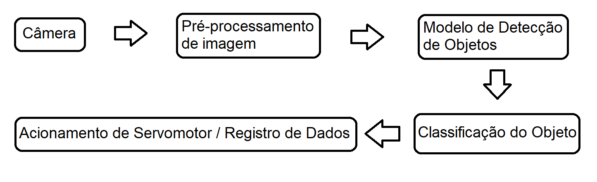
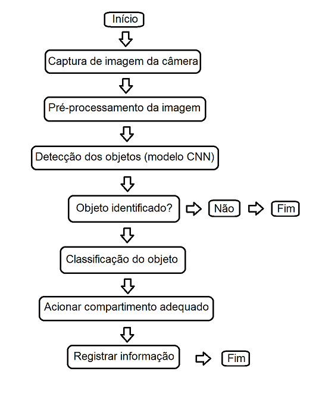

Objetivo Geral do Sistema
Desenvolver um sistema automatizado baseado em câmeras e técnicas de visão computacional para identificar, classificar e acionar mecanismos de separação de resíduos hospitalares de risco biológico, como seringas, luvas, máscaras, gazes e outros.
Diagrama de blocos

×

Descrição dos Blocos
Bloco: Câmera (Captura de Imagem ou Vídeo)
- Entrada: Ambiente com resíduos hospitalares.
- Processamento: Captura contínua de imagens (frame por frame).
- Saída: Matriz de pixels (imagem RGB ou grayscale).
Bloco: Pré-processamento de Imagem (OpenCV)
- Entrada: Imagem bruta da câmera.
- -> Redimensionamento da imagem.
- -> Normalização dos pixels.
- -> Conversão de cor (BGR → RGB ou HSV).
- -> Remoção de ruído (filtros).
- Saída: Imagem tratada para análise pelo modelo.
Bloco: Modelo de Detecção de Objetos (CNN - YOLOv5 ou YOLOv8)
- Entrada: Imagem pré-processada.
- -> Detecção de objetos presentes.
- -> Classificação entre tipos (seringa, luva, máscara, etc.).
- -> Retorno de bounding boxes e rótulos.
- Saída: Lista de objetos detectados com classes, posições e confiabilidade.
Bloco: Classificação do Objeto e Ação
- Entrada: Lista de objetos detectados.
- -> Verifica o tipo de lixo.
- -> Associa tipo de risco e destino.
- -> Se necessário, dispara alarme para lixo inadequado.
- Saída: Comando lógico de ação (ex: mover servomotor) e registro para relatório.
Bloco: Acionamento do Servomotor / Registro
- Entrada: Comando lógico de destino.
- -> Move o material para compartimento correto.
- -> Gera log de descarte e armazena para análise posterior.
- Saída: Ação física e armazenamento de dados.
Fluxograma Simplificado do Sistema

Tipos de Lixo e Classes no Sistema
- Classe 0: Lixo não identificado.
- Classe 1: Seringas/agulhas.
- Classe 2: Luvas contaminadas.
- Classe 3: Máscaras.
- Classe 4: Gaze/curativos.
- Classe 5: Frascos com fluidos.
Técnicas e Ferramentas Usadas
- OpenCV: Captura, manipulação e visualização das imagens.
- YOLOv5/YOLOv8: Detecção e classificação de objetos em tempo real.
- Python + PyTorch: Treinamento e integração do modelo.
- Servo Motor (PWM com GPIO ou Arduino): Movimento de separação física dos resíduos.
- Interface opcional (GUI ou Web): Para visualização e controle.